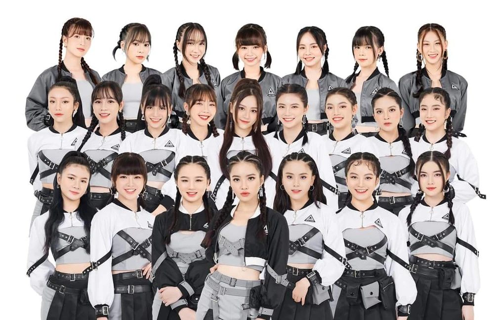

History
AKB48 (short for Akihabara48) is a Japanese all-female idol group based in Akihabara, Tokyo, where they have their own theater in Don Quijote. The group, established in 2005, is produced by Akimoto Yasushi and signed under EMI Records Japan/Universal Music Japan, originally from DefSTAR RECORDS/Sony Music Japan and You! Be Cool!/King Records. Currently the group consists of four teams: Team A, Team K, Team B and Team 4. In addition, the group also has trainees called Kenkyuusei, and an international transference team, Team Kaigai. They hold the record for highest overall single sales for a female group on the Oricon charts and also hold the Guinness World Record for world's "largest pop group".
The group also has five sub-units: No Sleeves, established in 2008, Watarirouka Hashiritai 7, established in 2009, French Kiss, established in 2010, and Not yet and DiVA, both established in 2011. Many (former) members have debuted as soloists while part of AKB48: Kashiwagi Yuki (still active), Fujita Nana, Ohori Megumi, Itano Tomomi, Maeda Atsuko, Watanabe Mayu, Iwasa Misaki, Takahashi Minami, Matsui Sakiko, Kasai Tomomi and Kuramochi Asuka. Some former AKB48 members debuted as soloists after their graduation: Oshima Mai, Hoshino Michiru, Ono Erena, Hayano Kaoru, Oku Manami, Sato Amina, Masuda Yuka, Goto Moe and Chou Kurena. AKB48 also has several sister groups located in cities across Japan, as well as in Indonesia, China, Manila, Thailand, and Taiwan.
Achievement
The pop group has achieved enormous popularity in Japan, and has been characterized as a social phenomenon. In 2011, the group had record sales in Japan of over $200 million. According to Oricon, AKB48 had sold a total of 11,787,000 singles as of January 6, 2012, breaking the record of "the most singles sold in Japan by a female group". Twelve of its singles have topped the Oricon TOP10 Weekly Singles Chart. In 2010, "Beginner" and "Heavy Rotation" placed, respectively, first and second in the list of Japan's best selling singles for the year, while in 2011 and 2012 AKB48 occupied the top five positions on the Oricon Yearly Singles Chart. Japanese ambassador to the United States, Ichirō Fujisaki, on meeting the group on its visit to Washington, D.C., stated that “AKB” stood for Adorable, Kind and Beautiful.
AKB48 holds several Guinness World Records, including being recognized on December 1, 2010 as the "largest pop group", when it consisted of 48 members. It set the record for "Most Number of Same Product Television Endorsement within 24 Hours" on February 28, 2012, after 90 of its group members appeared in 90 different commercials that were aired in the Kanto, Kansai and Tokai regions of Japan. On February 1, 2012, Japan Post issued a postage stamp in honor of the group.
Gallery
Aside from AKB48, which has many wonderful works and generations that change from time to time, AKB48 also has sister groups from many nations. Here are images and a brief history of each group.
JKT48

JKT48 (read as "J. K. T. forty-eight") is an Indonesian-Japanese idol girl group whose name is derived from its based city of Jakarta and the Japanese idol group AKB48. Formed in 2011, the group is the first AKB48 sister group outside Japan and adopts the concept of "idols you can meet", before switching to "idols that will come to meet you" since April 8, 2018. The group opened their own theater on the 4th floor of fX Sudirman shopping mall in early September 2012, where fans can attend daily performances every day except Monday. The theater was built as a close replica to the AKB48 Theater in Akihabara.
BNK48
BNK48 (read B.N.K. Forty-eight) is a Thai idol girl group and the third international sister group of Japan's AKB48, following Indonesia's JKT48 and China's SNH48 (former).
After holding its first audition in mid-2016 and announcing its first-generation members in early 2017, the group officially debuted on 2 June 2017 and released the debut single, "Yak Cha Dai Phop Thoe", on 8 August 2017. Its second single, "Khukki Siangthai", released on 20 December 2017, was a great success. As of March 2023, the group has 43 members.
The group is named after Bangkok, the capital city of Thailand, where its theatre, BNK48 the Campus, is located. Orchid, a flower popular in the country, serves as both the colour and motif of the group.
BNK48 announced the formation of their first sister group, CGM48 (named after the city of Chiang Mai), on 2 June 2019. CGM48 is the first domestic sister group to be launched outside Japan and second sister group of 48 Group in Thailand.
MNL48
MNL48 Team NIV (N4) is one of the three teams of MNL48, the Filipino sister group of AKB48. MNL stands for Manila and NIV stands for the fourth N group to debut in among all 48s groups. They have a contract with Star Music and their operator is Hallo Hallo Entertainment Inc. Their First General Election was on April 14, 2018. Team NIV released their song “Palusot ko'y Maybe” on February 23, 2019.
SGO48

SGO48 (short for Saigon48) was a Vietnamese Idol Group produced by Akimoto Yasushi and the 6th international sister group of AKB48. The 1st generation members were announced on November 17, 2018. Unlike the other 48 Groups, SGO48 is named after the former name of Ho Chi Minh City, which is Saigon. The motif color of the logo is based from a Lotus flower, which is the national flower of Vietnam.
On December 22, 2021, the group held their final concert entitled SGO48 The Last Show (Gửi Lại Thanh Xuân / Memories of Youth) at VOH Theater, along with the 3rd anniversary. After the show, the remaining 1st Generation members graduated, and the group was disbanded.
Philanthropy
A few days after the March 11, 2011 earthquake and tsunami, AKB48's official blog reported that that a sum of more than 617 million yen had been donated to the Japanese Red Cross Society. On April 1, the group issued a digital charity single titled "Dareka no Tame ni (What Can I Do for Someone?)", all profit from which was donated to a 2011 earthquake and tsunami relief fund. AKB48's 23rd single "Kaze wa Fuiteiru" was also dedicated to the 2011 tsunami victims, its title song's lyrics having been written with the intention of cheering up the Japanese people who were affected by the March 11 disaster.
In February 2012, the group announced another donation to the Japanese Red Cross, of over 580 million yen. It was reported that to date AKB48 had raised a total of over 1.25 billion yen for the earthquake and tsunami relief.